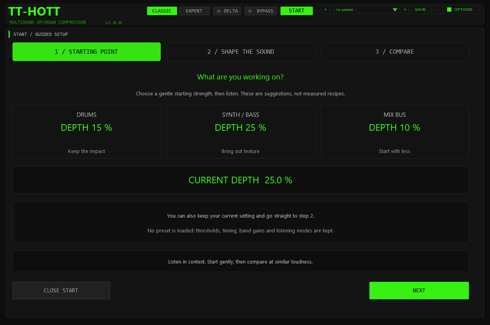
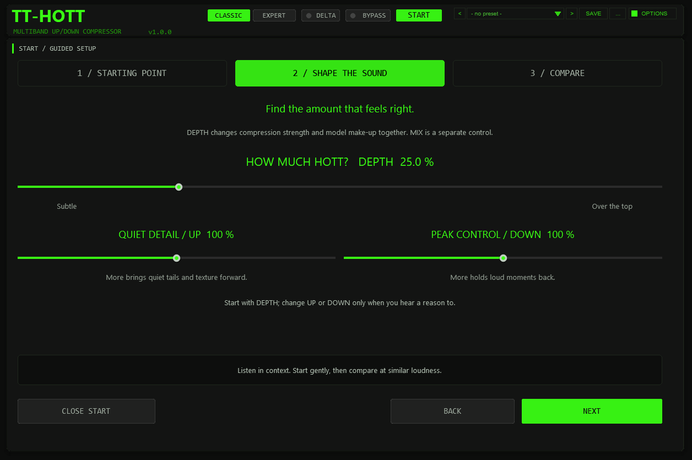
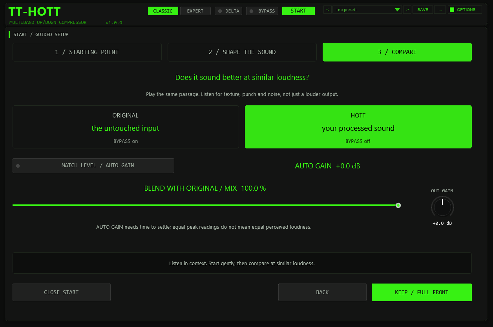
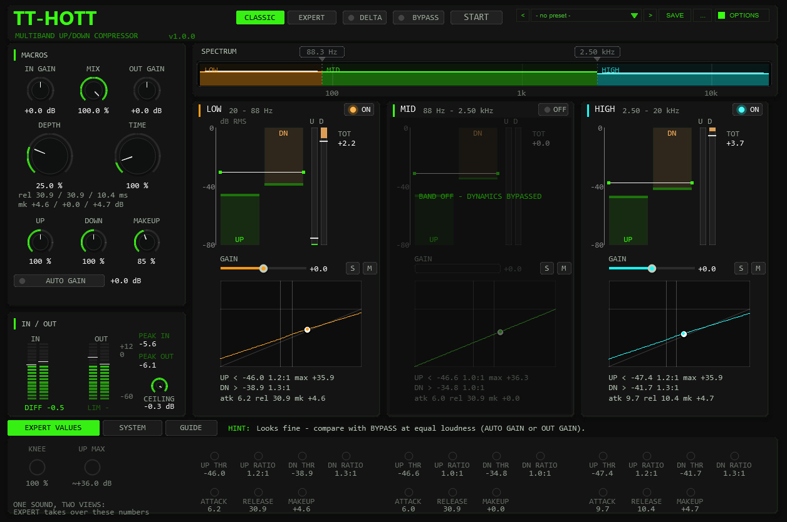
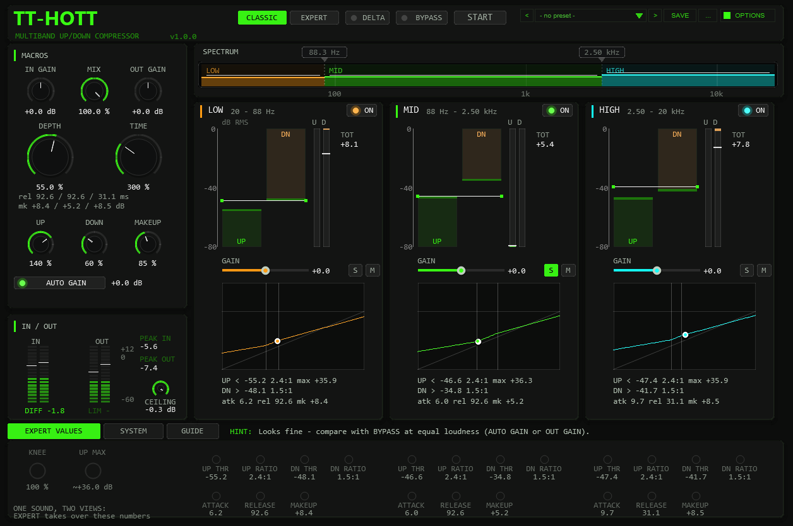
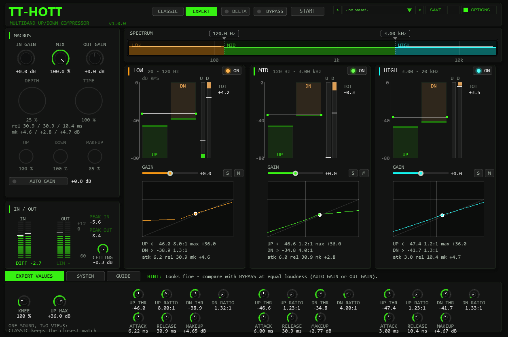
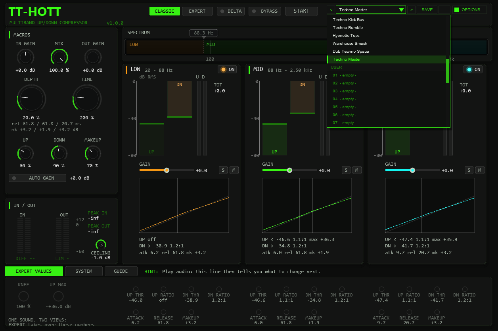
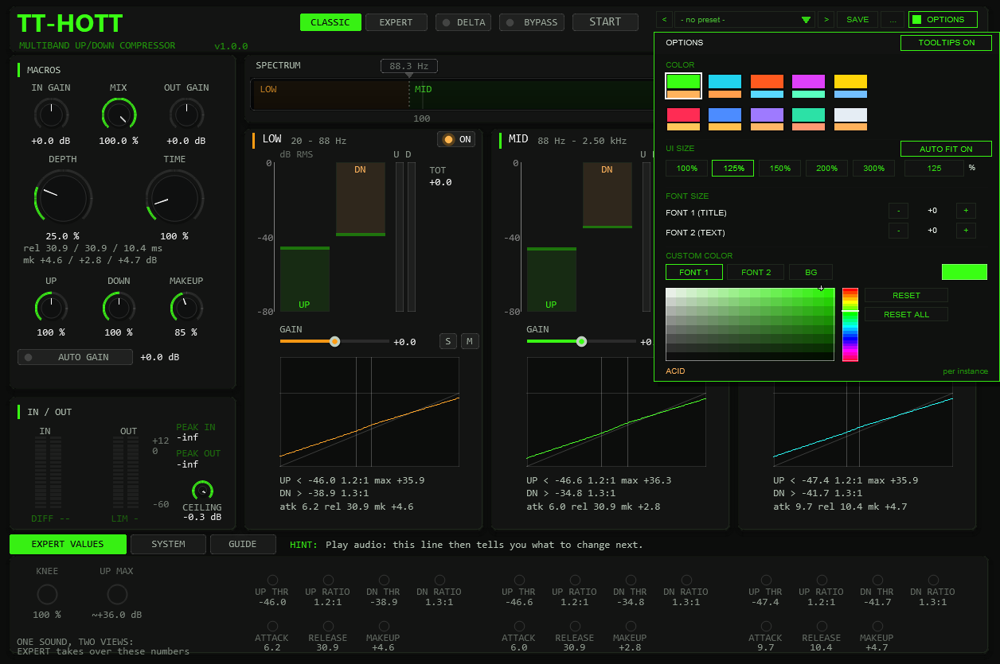

01The concept
OTT compression is a three-band compressor that works in both directions at the same time. The input is split with Linkwitz-Riley crossovers, and inside every band two gain computers run in parallel: an upward branch that raises everything below a threshold (quiet detail comes up) and a downward branch that pulls everything above another threshold down (peaks come off). Because both act simultaneously and the bands add up again, the level envelope flattens from both ends — quiet parts get loud, loud parts get held, the texture gets dense. That is the sound this effect is known for in EDM, dubstep and bass music production.
input → IN GAIN → stereo handling → LR4 split at X1 / X2 → LOW | MID | HIGH
each band: detector → gain = MAKEUP + up(below UP THR) − down(above DN THR)
bands → sum → AUTO GAIN → MIX with dry → OUT GAIN → CEILING limiter → outputTT-HOTT shows what this machinery actually does: every band draws its transfer curve (input level to output level) with the live point, a numbers bar states the effective thresholds, ratios and times, and separate meters display upward gain and downward reduction. Two ways to drive it: CLASSIC with the macros of the well-known setting (DEPTH, TIME, UP, DOWN, MAKEUP, per-band THRESH and GAIN), and EXPERT — the same engine with direct values in dB and ms.
02HOTT and HOTTER: the twins
TT-HOTT has a twin with five bands: TT-HOTTER, released on the same day.
TT-HOTT and TT-HOTTER are twins: the same idea (upward and downward compression in every band at the same time), the same macros and the same look. They are not the same plug-in twice. They differ in how the signal is split into bands, and that one decision changes latency, phase, resolution and what each one is best at.
| TT-HOTT | TT-HOTTER | |
|---|---|---|
| Bands | 3: LOW, MID, HIGH | 5: SUB, LOW, L-MID, MID, HIGH |
| Crossovers | Linkwitz-Riley (IIR), minimum phase. CLASSIC: fixed at 88.3 Hz and 2.5 kHz; EXPERT: X1 40–800 Hz, X2 800 Hz–12 kHz | Linear phase (FFT). X1–X4 always free: 20–400 Hz, 40–1000 Hz, 100–4000 Hz, 400 Hz–12 kHz; drag them in the display |
| Latency | None without lookahead; LOOKAHEAD up to 5 ms, plus 1.5 ms when CEILING is on | 5240 samples (about 109 ms at 48 kHz, 119 ms at 44.1 kHz), plus LOOKAHEAD up to 10 ms |
| Sound model | CLASSIC follows the measured behaviour of the well-known factory setting; EXPERT shows the same sound as numbers | Own tuning for five bands, level-neutral on pink noise at the start setting |
| Modes | CLASSIC ↔ EXPERT keep the sound in both directions (the macros are fitted back as closely as possible, HINT shows any rest) | MACRO → EXPERT keeps the sound; back to MACRO follows the macros again |
| EXPERT view | All three bands at once (EXPERT VALUES strip) | The focused band (click a band to focus it) |
| Display | Spectrum strip, per-band transfer curves with up/down meters, numbers bar, HINT line, START guided setup | Before/after display with SPECTRUM, BALANCE and SCOPE, genre target curves with LEARN and MATCH, per-band curve with live dot, 5-BAND RESPONSE |
| Saturation | none | DRIVE (tanh shaper after the band sum, 0 = clean) |
| Ceiling | True-peak limiter with 1.5 ms lookahead, −12 to 0 dBFS (factory −0.3 dBFS) | True-peak limiter, −24 to 0 dBFS (factory 0 = off) |
| AUTO GAIN | off by default | on by default |
| Both have | DEPTH, TIME, UP, DOWN and MAKEUP macros, KNEE, UP MAX, RMS/PEAK detector with stereo LINK, stereo or mid/side, sidechain OFF/EXT/LISTEN, MIX, DELTA, BYPASS with the same latency, per-band GAIN, UP/DOWN switches, SOLO and MUTE, user preset bank, the same colour scheme | |
The real difference: how the bands are split
TT-HOTT uses Linkwitz-Riley crossovers, like the classic OTT-style effect. They are minimum-phase filters: no latency, and the bands add up to a flat level, but with a phase turn around each crossover. On most material you do not hear that turn; it is part of the familiar sound. The price is that a kick or bass note around the crossover is smeared slightly in time, and with only three bands the lowest band holds sub and kick body together.
TT-HOTTER uses linear-phase crossovers. With nothing compressed the bands add up to the input exactly, with no phase turn at all. That needs a look into the future: about 109 ms at 48 kHz, which REAPER hides with plug-in delay compensation on playback. Five bands mean the sub (below 80 Hz) is compressed apart from the kick body and the low mids, so the low end stays steadier at high DEPTH. One side effect is typical for linear-phase filters: when bands get very different gains, a sharp transient can get a faint pre-echo just before it. At normal settings it is masked.
Which one when?
- Recording, live input, playing a synth through it: TT-HOTT. TT-HOTTER’s latency makes monitoring while you play impossible.
- The classic OTT sound, fast: TT-HOTT in CLASSIC. Its macros follow the measured original.
- Kick and bass, techno and house low end: TT-HOTTER. SUB and LOW are separate, there is no phase turn at the crossovers, and the crossovers can sit exactly where your kick and bass meet.
- Mix bus and master: TT-HOTTER for the finer split, the true-peak ceiling and the target curves (LEARN, MATCH); TT-HOTT when you need zero latency or the lowest CPU load.
- Drums with sharp transients at heavy settings: try both. TT-HOTT keeps the attack free of pre-echo, TT-HOTTER keeps it in phase.
- Many instances in a big project: TT-HOTT uses less CPU.
Presets carry the same names where they do the same job (for example Hypnotic Tops and Techno Master), so you can A/B the twins on the same track. Numbers are not interchangeable: a TT-HOTT preset loaded by hand into TT-HOTTER does not give the same sound, because the bands lie elsewhere.
03Quick start
- Insert
TT-HOTTon a synth, drum or vocal track. A new instance starts in CLASSIC mode at DEPTH 25 % — a mild amount of the model: quiet parts come up, peaks get held down, nothing takes over. The full over-the-top sound is one click away with the preset Classic 100 (DEPTH at 100 %). - The level rises with DEPTH: the three bands carry model make-up of about +14/+9/+14 dB at DEPTH 100 % (why?). At the INIT start it is about +4.6/+2.8/+4.7 dB, MAKEUP scales it further in CLASSIC, AUTO GAIN level-matches while judging, or pull OUT down.
- Too much? Turn DEPTH down first. Too squashed? Turn DOWN below 100 %, then UP. Too sharp on top? Raise the HIGH band’s THRESH or pull its GAIN fader.
- Watch a band panel while you turn: the transfer curve and the numbers bar show what the macros produce. Use DELTA to hear only the change the plug-in makes.
- Load a factory preset from the bar in the header as a starting point (see Presets).
START: guided setup
Click START in the header to open an optional three-step view. Opening, navigating or closing it does not change the sound. These are the same parameters as on the full front; host automation remains visible. The tour remembers its page while the instance is open, including across transport starts; it adds no preset or project format.
- Starting point. DRUMS sets DEPTH to 15 %, SYNTH / BASS to 25 %, MIX BUS to 10 %. Each choice changes only DEPTH; thresholds, timing, gains and monitoring settings stay as they are. These are gentle suggestions to try, not measured recipes or complete presets. NEXT keeps your current setting.
- Shape the sound. DEPTH changes upward strength, downward strength and model make-up together. UP brings quiet detail forward, but may also lift noise and tails. DOWN holds loud moments back, but may reduce punch. Both macros affect all three bands.
- Compare. ORIGINAL switches BYPASS on; HOTT switches it off. Let AUTO GAIN settle and trim OUT GAIN if needed. MIX blends processed and original signal separately from DEPTH. Equal peak readings do not guarantee equal perceived loudness. The comparison buttons are unavailable while DELTA, SC LISTEN or any band SOLO/MUTE is active; restore normal monitoring first.
EXPERT settings are not silently converted: the tour explains the difference and offers an explicit CONVERT TO CLASSIC / CLOSEST MATCH button using the existing mode conversion. Its remaining mismatch appears in the tour hint. You can close START and keep EXPERT unchanged. Closing START always keeps the current settings, including BYPASS if you last selected ORIGINAL. OPTIONS, tooltips and AUTO FIT work in the tour as on the full front.



04The front: bands, boxes & meters
The drawn front is the interface (design grid about 1000×660, redrawn at the selected UI size); all sliders are hidden. The header carries the preset bar, OPTIONS, the CLASSIC | EXPERT tabs, BYPASS and DELTA. The left column holds the large DEPTH and TIME controls — TIME shows the resulting release times in ms as text — plus the smaller IN, OUT, MIX, UP and DOWN controls and the AUTO GAIN switch. The centre is the three band panels LOW / MID / HIGH:
- Band boxes. Each panel has a vertical level scale (−80…0 dB). The left box is the UP region — the range below the upward threshold where quiet signal is raised; the right box is the DOWN region — the range above the downward threshold where loud signal is pulled down. The live band level runs through both as a bar. Drag a box edge to set the threshold (CLASSIC: the THRESH macro moves both edges together; EXPERT: UP THR and DN THR individually). Drag vertically inside a box to trim the band’s GAIN in dB; Ctrl-click a box to switch its branch on or off.
- Band switch. Each band can be switched off entirely: OFF takes the band out of the dynamics — no upward, no downward, no make-up, no band GAIN — it passes at 0 dB and stays audible in the sum. That is the difference to MUTE, which silences the band; SOLO and MUTE keep working over a switched-off band.
- Transfer curve. Below the boxes: output level against input level, drawn from the currently effective values, with the neutral diagonal and threshold marks. The live point sits on the curve at the current band level, so you see the gain move with the music.
- Numbers bar. One line per band with the resolved values, e.g.
UP: below −46.0 dB, 4.0:1, max +35.9 dB / DOWN: above −38.9 dB, inf:1 / attack 6.2 ms / release 30.9 ms. In CLASSIC these are the numbers your macros produce right now; in EXPERT they are the sliders. This is the glass box: a macro setting becomes a set of concrete dynamics values. - Meters. Per band: upward gain (+dB) and downward reduction (−dB) shown separately. The IN/OUT panel reads the whole plug-in: PEAK IN and PEAK OUT are held peak meters in dBFS, DIFF states PEAK OUT minus PEAK IN — how far the processed peak sits above the input peak — and LIM shows the current reduction of the ceiling limiter in dB. In digital silence, with the transport stopped for example, the meters rest at zero instead of climbing to their maximum. The spectrum strip on top shows each band as an area of its input level (the white line is the level after the band gain) and carries the two crossovers as tabs — draggable in EXPERT, visible but locked in CLASSIC.

Level scale: thresholds and band levels read in dB RMS (mean-square); a full-scale sine
reads −3 dB on this scale. Hover any control for a tooltip; OPTIONS > TOOLTIPS ON / OFF
switches them off per instance.
05CLASSIC & EXPERT: the numbers


Both modes drive the same engine; only the addressing differs. CLASSIC works with seven macros: DEPTH scales upward strength, downward strength and make-up together — it is not a dry/wet control (that is MIX); TIME scales the release times (100 % = factory timing, 200 % = release twice as long; attack stays fixed); UP and DOWN scale the two branches (100 % = factory strength, 0 % = branch off, up to 200 %); per band, THRESH shifts both thresholds together (about 23–24 dB per 100 %) and GAIN trims the band level after the dynamics. MAKEUP scales the model make-up of all three bands together (0–200 %, 100 % = the full model amount, INIT 85 %); it exists only in CLASSIC — in EXPERT the per-band make-up values apply. In CLASSIC the EXPERT fields stay visible but dimmed, showing the resolved numbers.
One sound, two views. Switching modes keeps what you hear. Clicking EXPERT writes the
values the macros currently resolve to into the EXPERT controls (deviation ≤ 0.4 dB at extreme levels;
upward ratios above 20:1 are clipped by the EXPERT range), so a CLASSIC setting can be taken apart there.
Clicking CLASSIC goes the other way: TT-HOTT searches the macros (DEPTH, TIME, UP, DOWN, MAKEUP and
THRESH per band) that come closest to your EXPERT curves and names the remaining difference in the HINT line,
for example curves within 1.2 dB, attack fixed. CLASSIC has fewer degrees of freedom — attack,
knee and crossovers are fixed there, and one UP/DOWN setting serves all three bands — so a heavily edited
EXPERT setting may not come back exactly. Your EXPERT values are not lost: switch back to EXPERT without
touching the macros and they return unchanged. Loading a preset or INIT starts fresh. Automating the MODE
parameter switches directly without this transfer.
The CLASSIC model resolves to these values at DEPTH 100 %, TIME 100 %, UP/DOWN 100 %, THRESH 100 % (bands LOW / MID / HIGH):
| Quantity | LOW | MID | HIGH |
|---|---|---|---|
| Band range | 20 Hz – 88.3 Hz | 88.3 Hz – 2.5 kHz | 2.5 kHz – 20 kHz |
| Upward threshold | −46.0 dB | −46.6 dB | −47.4 dB |
| Upward ratio | 3.97:1 | 4.10:1 | 3.96:1 |
| Upward gain ceiling | +35.9 dB | +36.3 dB | +35.9 dB |
| Downward threshold | −38.9 dB | −34.8 dB | −41.7 dB |
| Downward ratio | infinite in all bands (hard cut above the threshold; overall gain floor −26 to −32 dB) | ||
| Attack | 6.2 ms | 6.0 ms | 9.7 ms |
| Release at TIME 100 % | 30.9 ms | 30.9 ms | 10.4 ms |
| Make-up at DEPTH 100 %, MAKEUP 100 % | +14.0 dB | +9.1 dB | +14.1 dB |
Why is the make-up gain so high?
Because it is part of the measured model, not a comfort feature. The downward branch compresses infinitely above its threshold and the crossover split costs level on the way — the model wins its density back with make-up: each band follows its own cubic DEPTH curve (the model’s mkshape curve) and lands at +14.0/+9.1/+14.1 dB at DEPTH 100 %; even at DEPTH 25 % that is still +5.5/+3.3/+5.5 dB. Without this gain the plug-in would sound quieter and duller than the setting it reproduces — with it, the output is louder than the input. Hence the 0.2.0 defaults: INIT starts at DEPTH 25 % with MAKEUP at 85 % (make-up about +4.6/+2.8/+4.7 dB), the MAKEUP macro scales the model amount directly in CLASSIC, and AUTO GAIN matches the wet level back to the input whenever you want to judge the timbre rather than the loudness.
Characteristic curve calculator
The curves below are computed with the same constants and formulas as the plug-in (CLASSIC model). Move the macros and watch the three bands; the table under the chart is what the plug-in shows under every band. The chart plots output level against input level on the mean-square scale (a full-scale sine reads −3 dB). To the left of the knee the upward branch lifts quiet signal, to the right the downward branch holds loud signal.
| Band | Up below | Up ratio | Down above | Down ratio | Attack | Release | Make-up |
|---|
The calculator reproduces the CLASSIC model only and always uses the full model make-up (MAKEUP 100 %); the factory preset Sidechain Duck sets MAKEUP to 0 %, so its make-up column differs. EXPERT mode sets the same numbers directly; switching to EXPERT copies what the table shows into the EXPERT controls.
The split is two cascaded 4th-order Linkwitz-Riley crossovers at 88.3 Hz and 2500 Hz — fixed in CLASSIC, freely movable in EXPERT (40–800 Hz / 0.8–12 kHz); an all-pass in the low band keeps the three bands magnitude-flat when summed. Both knees of the model are nearly hard (0.03–0.5 dB wide), which is where the characteristic edge comes from. EXPERT adds two global controls: KNEE scales the knee widths (10–400 %, 100 % = factory) and UP MAX GAIN caps the upward gain (0–48 dB, factory 36).
One property to know: upward ratios above about 4:1 scaled beyond 133 % (UP > 133 % at full DEPTH) become over-compensating — the output level falls as the input drops. That is the model’s behaviour, kept as measured; on a master it is a deliberate effect, not a mistake.
06Sidechain & stereo
- OFF (default): every band detects its own input.
- EXT: the detectors follow the external sidechain input instead (pins 3/4 — set the plug-in’s track to 4 channels and send the trigger track there). The sidechain runs through its own crossover with the same frequencies and the same IN GAIN scaling; the audio path stays on the main input.
- LISTEN: the output becomes the sidechain signal (times IN/OUT GAIN, no dynamics), so you can level-match and check the source before switching back. It is delayed by LOOKAHEAD like every other output path, so it stays in time with the rest of the project.
- No signal on pins 3/4: the detector then sees silence and the upward gain sits at its maximum. While EXT or LISTEN is selected and nothing has arrived for about 6 s (and at least 2 s of audio have played), the SC switch gets a red outline and the GUIDE tab shows NO SC SIGNAL.
Stereo handling is independent of the source: STEREO LINK (0–100 %) blends between one shared gain computer for both channels (100 %, factory) and two independent ones (0 %). STEREO MODE switches the whole processing to MID/SIDE, where the bands compress the mid and side channels separately — at high DEPTH this is a classic widening trick, since the side channel carries the stereo content and gets its own dynamics.
07Lookahead & latency
The model itself has no lookahead, so with LOOKAHEAD at 0 ms the plug-in adds no latency. LOOKAHEAD (0–5 ms) delays the bands and the dry path equally while the detector keeps seeing the un-delayed signal, so the gain computer can react just before a transient arrives. The delay is reported to the host (PDC), and MIX, DELTA and BYPASS compensate it, so blending and comparing stay phase-true and click-free. A LOOKAHEAD change applies immediately and updates the reported latency.
The CEILING limiter
Density costs crest factor. The model’s attack of about 6–10 ms lets transients pass while everything between them gets raised, so even at matched RMS level the processed peaks sit above the input peaks — measured +2 to +3 dB on typical material. On a master such overshoot is rarely wanted, so the output has a limiter of its own: CEILING (−12 to 0 dB, INIT at −0.3 dB, 0 = off) caps the output so it never exceeds the ceiling. It reacts with 1.5 ms of lookahead (capped at 510 samples, so 1.33 ms at 384 kHz) and an 80 ms release; while it is active the lookahead is added to the reported latency (PDC) on top of the LOOKAHEAD control, so the host stays in sync. At CEILING 0 the signal path is delay-free and bit-identical to the unlimited signal, and in BYPASS nothing is limited. The LIM readout of the IN/OUT panel shows the current reduction in dB.
True peak (0.6.0). The limiter does not only look at the samples but also at the peaks between them: it estimates three intermediate values between every pair of samples (4× oversampled, 16-tap interpolation) and limits the highest of them. That matters because a signal that stays under the ceiling sample by sample can still swing above it after a D/A converter or a lossy encoder, especially with a lot of high-frequency energy such as hi-hats and noise. Measured on test signals (noise, hi-hat bursts, a sine at a quarter of the sample rate) the true peak was up to 2.4 dB over the ceiling with the sample-peak limiter of 0.5.0; it is at most 0.35 dB over now (clicks 0.35, hi-hat bursts 0.23, noise 0.19 dB). The estimate has the accuracy of the usual 4× true-peak meters (BS.1770 allows 0.55 dB). Very high-frequency content above about 19 kHz can be limited up to 0.3 dB harder than necessary. The PEAK OUT readout still shows sample peaks, so it can read a little below the ceiling while the true peak sits at it. Latency and lookahead are unchanged.
08Auto gain, mix & delta
AUTO GAIN matches the wet level back to the input level with a slow RMS average (1.5 s time constant, limited to ±24 dB, frozen in silence). It acts only in the wet path and is a monitoring aid: it removes the loudness bias of the make-up so you can judge the spectral and dynamic change on equal loudness. Leave it off when the level lift is part of the sound.
MIX blends the original with the processed signal (100 %). The wet path is the sum of the three crossover bands, which rotates the phase of the signal even when nothing is compressed. To keep parallel mixing free of phasing, the dry signal runs through the same crossover (without IN GAIN, latency-matched) and is only then blended; turning MIX at neutral settings changes nothing, and a slow sweep never sounds like a phaser. At 0 % the input passes bit-exact. S and M apply to the dry part as well, at every MIX setting. DELTA outputs only the difference between processed signal and input (MIX is ignored, latency compensated) — the fastest way to hear what the compressor actually adds. BYPASS crossfades to the untouched input over 10 ms while the gain computers keep running, so toggling never clicks and re-engaging picks up where it left off.
09Preset bar & user bank
The bar in the header (< name > SAVE ...)
loads and saves the whole sound of the instance in one step: all macros, band and system
settings. Not part of a preset: the colour scheme and the OPTIONS settings (UI size, tooltips) —
a loaded preset keeps the instance’s appearance.

OPTIONS. The name opens the list with the FACTORY and USER sections.| Preset | Made for |
|---|---|
| Init | factory defaults: DEPTH 25 %, MAKEUP 85 % — the mild starting point |
| Classic 100 | the unchanged model at DEPTH 100 % — the full over-the-top sound |
| Gentle Lift | buses and masters, DEPTH 25 % |
| Bus Glue 30 | drum and synth buses, gentle glue with −2 dB input trim |
| Drum Smack | breaks and drum buses, both branches slightly above 100 % |
| Kick Punch | kick buses, HIGH band muted (LOW/MID only) |
| Bass Tighten | bass and 808s, HIGH branches off |
| Vocal Air | vocals, slower release, HIGH threshold raised |
| Synth Wide | supersaws and stabs in MID/SIDE |
| Hat Shine | hats and tops, LOW muted, HIGH +3 dB |
| Pad Bloom | pads and strings, four times the release time |
| Parallel 50 | MIX 50 %, classic parallel setup |
| Dubstep Growl | growl basses, full model with both branches above 100 % |
| Transient Keep | less downward, more upward: hits stay punchy |
| Tame Harsh | sharp synths and sibilance, upward mostly off |
| Mix Bus Gentle | mix buses and stems: DEPTH 15 %, slow release, reduced make-up — glue without a level jump |
| Drum Bus Parallel | drum buses: a strong setting blended in at MIX 35 %, transients stay |
| Acoustic Room | guitar, piano, acoustic drums: more room and decay, less downward, HIGH −1 dB |
| Vocal Even | EXPERT, vocals: crossovers 120 Hz / 5 kHz, soft knee, lifts quiet syllables, catches sibilance fast |
| Master Polish | EXPERT, masters: very soft knee, 1.25:1 up / 1.6:1 down, slow times, upward at most 12 dB |
| Podcast Voice | EXPERT, speech: no upward in LOW (no rumble lift), 2:1 up / 4:1 down in MID, fast HIGH control |
| Sidechain Duck | external sidechain (pins 3/4), pure ducking (UP 0 %, DOWN 150 %, MAKEUP 0 %); needs a routed sidechain |
Factory presets are code, not saved data: they never overwrite anything you did not
load yourself. Your own presets live in a 32-slot user bank that is part of the plug-in state:
saved with the project, with FX-chain and track-template copies, and in every REAPER preset of
this plug-in (the + button in the FX window toolbar). To move the bank to another
project or computer, save a REAPER preset once and load it there. SAVE stores into
the selected user slot (with a factory preset selected, into the first free one); the
... menu offers RENAME, COPY, DELETE and INIT. Names can be up to 24 characters.
REAPER keeps Space for the transport, so type Shift+Space for a
blank.
10In practice
Setting it up for a good sound
The same six steps are in the GUIDE tab of the plug-in, and the HINT line next to the tabs reads the meters while you play and names the next thing to change.
- Start gentle. Load a factory preset or set DEPTH to 30–50 %. 100 % is the full over-the-top sound and rarely the right amount on a whole mix. DEPTH is not a dry/wet control; that is MIX.
- Match the level before you judge. Make-up adds about +14 dB at full DEPTH and upward gain can add more, and louder always sounds better. Turn MAKEUP down, switch AUTO GAIN on or trim OUT GAIN until BYPASS and the effect are equally loud, then compare.
- Read the U and D meters. The U meter (upward gain) should move with the music. If it sits at the top, the noise floor and room tone are being lifted: lower UP or THRESH. A D meter that is always lit means the band is held hard all the time.
- Get punch back. Lower DOWN or DEPTH, raise TIME for a smoother release, or blend the original in with MIX 40–70 % (parallel compression keeps the transients).
- Balance the bands. Press S to hear one band alone and trim each band with its GAIN fader. S and M apply at every MIX setting: with MIX at 0 %, soloing LOW still plays only the low band.
- Go to EXPERT only when you need exact numbers. Switching keeps the sound: EXPERT shows your CLASSIC setting as thresholds, ratios and times you can edit directly, and CLASSIC picks the closest macros back.
| Meter shows | It means | Do this |
|---|---|---|
| U pinned at the top, hiss or room tone louder | upward branch lifts everything quiet | lower UP or the band THRESH, or lower that band’s GAIN |
| D always lit, sound flat and dull | downward branch holds the band down constantly | lower DOWN or DEPTH, raise the band THRESH |
| OUT at 0 dBFS | the make-up gain overloads the output | lower OUT GAIN |
| sounds better than bypass, but only because it is louder | level difference, not quality | AUTO GAIN on, or OUT GAIN down until both are equally loud |
Typical starting points
| Source | Start with |
|---|---|
| Whole mix / master | Gentle Lift or Bus Glue 30; DEPTH 20–35 %, AUTO GAIN off, check the level |
| Drums | Drum Smack; DEPTH 50–70 %, TIME 50–100 %, MIX 50–70 % to keep the attack |
| Synth / lead | DEPTH 60–100 %, then pull HIGH GAIN down 2–3 dB if it gets harsh |
| Bass | DEPTH 40–70 %; keep the lows steady, solo LOW to check it stays clean |
| Vocals | Vocal Air; DEPTH 30–50 %, raise HIGH THRESH before touching its GAIN |
| Techno kick bus | Techno Kick Bus: slower attack keeps the click, no upward on LOW so the tail does not swell |
| Techno rumble | Techno Rumble: denser downward, slow, no upward on LOW, so the tail does not cover the next kick |
| Hats, rides, percussion | Hypnotic Tops: fast, lots of upward, LOW without dynamics and −6 dB, HIGH +1.5 dB, 80 % mix |
| Techno drum bus | Warehouse Smash: full depth, 35 % mix, HIGH +2 dB |
| Dub techno chords | Dub Techno Space: slow, lots of upward brings delay and reverb tails up, 60 % mix |
| Techno master | Techno Master: DEPTH 20 %, slow, LOW without upward, lookahead 1.5 ms, ceiling −1 dB |
More examples by source
- Supersaws & synth stabs: Synth Wide (DEPTH 80 %, MID/SIDE) or the full model; AUTO GAIN on while comparing, then decide whether the lift stays.
- Drum bus: Bus Glue 30 for cohesion, Drum Smack for pressure; Parallel 50 blends the density in instead of replacing the bus.
- Kick: Kick Punch keeps the body low and the mid focused without hat clutter.
- Bass / growl: Dubstep Growl on the bass chain; Bass Tighten when the top end should pass through untouched.
- Hats & tops: Hat Shine is the classic use — LOW muted, HIGH lifted.
- Pads & strings: Pad Bloom (TIME 400 %) swells slowly instead of pumping.
- Vocals: Vocal Air for presence; Tame Harsh when sibilants get sharp. Raise the HIGH THRESH to soften the top end before touching its GAIN.
- On a master, go gentle: Gentle Lift or Bus Glue 30, AUTO GAIN off (you want the lift), and check the numbers bar — the infinite downward ratio is doing more than it sounds.
- Hunting for the cause: SOLO one band at a time, then DELTA; both together show which band contributes which part of the effect.
11Troubleshooting
- The output is much louder than the input — that is the make-up (+14/+9/+14 dB at full DEPTH). Turn MAKEUP down (CLASSIC), use AUTO GAIN while judging, then set OUT GAIN deliberately.
- The peaks sit above the input even with AUTO GAIN on — expected: at matched RMS the model lets transients pass and the crest factor rises (measured +2 to +3 dB). Keep CEILING below 0 dB — a new instance starts at −0.3 dB — and the output stays under it.
- The meters read 0 while the transport is stopped — in digital silence the meters rest at zero instead of climbing to their maximum; the audio itself is not touched.
- The crossover handles will not move — CLASSIC locks them; switch to EXPERT to drag.
- A band is silent — check its MUTE and the SOLO states of the other bands (solo wins).
- DELTA sounds huge even at modest DEPTH — expected: the upward branch adds up to +36 dB below −46 dB, and DELTA plays exactly that difference.
- The sound changes a little when switching from EXPERT to CLASSIC — CLASSIC cannot express every EXPERT setting (attack, knee and crossovers are fixed there); the HINT line names the difference. Switch back to EXPERT without touching the macros to get your values back.
12Changelog
1.0.0 — First stable release
- Version 1.0.0 with the public release (Drop 07 of Acid Season), together with its twin. No sound change from 0.9.12.
0.9.12 — Review fixes
- FIX: comments match the code.
- The snapshot path does not call the expert band solver, and the floor runs from -96 to 0.
- Sound unchanged.
0.9.11 — Techno presets, review fix
- Six techno factory presets: Techno Kick Bus, Techno Rumble, Hypnotic Tops, Warehouse Smash, Dub Techno Space, Techno Master.
- A damaged user preset with an absurd gain value can no longer make the output silent until the plug-in is reloaded: gains are capped at ±96 dB, and the wet sum is cleaned before AUTO GAIN and the limiter.
0.9.10 — Review fixes
- Switching SIDECHAIN off and on again no longer breaks the sidechain crossover. In 0.9.9 the reset also cleared the filter coefficients: the low and mid detectors then saw silence and pushed their upward gain to the maximum, the high detector saw the full band.
- A damaged user preset can no longer feed a ratio below 1:1 or a crossover below 1 Hz into the gain computer. A user preset that contains a non-finite value is not loaded.
- CLASSIC to EXPERT: when an upward ratio above 20:1 has to be capped, HINT says so instead of reporting an exact copy.
0.9.9 — Review fixes
- Bass Mid Push runs in EXPERT, so the crossovers at 800 Hz and 3 kHz are used. The band dynamics are the CLASSIC curve of DEPTH 70 %, UP 150 %, DOWN 70 % and MAKEUP 100 %, with upward gain off on the low and high bands, +3 dB on the mid band and mix at 40 %.
- The peak meters keep every audio block since the last frame. A short peak no longer disappears from PEAK OUT and the limiter readout just because it fell in the block after the display read the meters.
- While BYPASS fades, the output limiter follows the signal that is playing, and the blend stays at the ceiling. Full bypass and normal processing are unchanged.
- Switching between STEREO and MID/SIDE no longer plays the lookahead buffer back in the wrong encoding.
- A second edit to the curve within the 10 ms fade continues from the gain just heard.
- Turning SIDECHAIN off clears the sidechain filters, so an old hit does not come back when EXT or LISTEN is switched on again.
- A control move in the same moment as a factory preset is kept. The short check that restores values the host overwrites on its own still runs.
0.8.0 — Bass Mid Push
- New factory preset Bass Mid Push: crossovers at 800 Hz and 3 kHz, more upward than downward compression, 40 % mix and +3 dB on the mid band; the low band gets no upward gain. Use it on a techno or tech house bassline so its mids carry on small speakers.
- Sound of the other presets, parameters and saved state unchanged.
0.7.0 — New front
- Flat front in the style of the newer TimTechlor plug-ins: flat knobs, segment buttons, level bars, cards with a colour bar per band.
- The spectrum strip shows each band as an area of its input level; the crossovers are draggable tabs. SYSTEM tab: segment rows for DETECTOR, STEREO MODE and SIDECHAIN.
- Sound, parameters, presets and saved state unchanged.
0.6.0 — True-peak CEILING
- CEILING is now a true-peak limiter: it also limits the peaks between the samples (4× oversampled, 16-tap interpolation), so the output stays at the ceiling after a D/A converter or a lossy encoder. Measured on test signals the true peak was up to 2.4 dB over the ceiling before and is at most 0.35 dB over now. Latency and lookahead do not change.
0.5.0 — Version step
- No change to sound, presets or controls. The START tour and mode-switch checks were corrected and re-verified.
0.3.0 — One sound, two views
- Optional START guided setup: choose a depth starting point, shape quiet detail and peaks, then compare with AUTO GAIN, MIX and OUT GAIN. Opening the view never changes the sound; EXPERT conversion is explicit.
- CLASSIC and EXPERT share one sound: switching modes carries the setting over. EXPERT takes the resolved CLASSIC numbers, CLASSIC picks the closest macros and the HINT line names any remaining difference; switching back and forth without touching the macros restores your EXPERT values exactly. The SNAPSHOT button is gone — the mode switch does its job.
- SC LISTEN is now delayed by LOOKAHEAD like every other output path, so it lines up with the latency reported to REAPER.
- Six new factory presets: Mix Bus Gentle, Drum Bus Parallel, Acoustic Room, Vocal Even, Master Polish, Podcast Voice.
- The HINT line names the limiter’s gain reduction and suggests CEILING when the output hits 0 dBFS with CEILING off.
0.2.7 — UI kit 7, small front fixes
- Internal: shared UI kit 7 modules. No change to sound or presets.
- The PEAK IN and PEAK OUT fields no longer overlap by one pixel row, so a click resets only the peak you clicked. The CLASSIC hint over KNEE and UP MAX also covers their value text.
0.2.6 — Smooth changes
- Changes to MAKEUP, DEPTH, the thresholds and other curve settings now fade in over 10 ms instead of jumping, and a crossover frequency change glides to the new value instead of stepping the filters. Loading a user preset or INIT right after a factory preset is no longer overwritten by the factory values.
0.2.5 — Meter fix
- The band meters (IN level, UP, DN and TOT) now average only the channels that carry a signal. With a one-sided signal and STEREO LINK below 100 %, the silent channel no longer drags the level marker, the curve point and the spectrum bar out of view or inflates the upward readout.
0.2.4 — Review fixes, part 3
- The GUIDE hint "OUT peaks at the CEILING" now appears when the limiter holds the output at the ceiling (it could never trigger before), and it stays quiet in BYPASS. The NO SC SIGNAL warning fires after about 6 s without a sidechain signal instead of about 12 s, and not before two seconds of audio have played. UP MAX, RELEASE, LOOKAHEAD and band GAIN now round to their 0.1 step, and Ctrl-click on DEPTH resets to the factory 25 %. The calculator button Sidechain Duck matches the preset (UP 0 %), and the limiter lookahead cap at high sample rates is documented.
0.2.3 — Review fixes, part 2
- The SIDECHAIN switch gets a red outline and a NO SC SIGNAL tooltip (and GUIDE hint) while EXT or LISTEN is selected and nothing arrives on pins 3/4. Loading a preset now changes all sliders in one step, so no half-applied state is ever processed. Ctrl-click resets of DN RATIO write the exact factory value; IN GAIN and OUT GAIN snap to 0.1 dB.
0.2.2 — Review fixes
- The source header no longer shows up as a second TT-HOTT in the FX browser. The Sidechain Duck preset is now pure ducking (UP 0 %, MAKEUP 0 %) and no longer lifts the signal by about 45 dB when no sidechain is routed; an unrouted sidechain reads as silence and lifts the upward gain, so route it before using EXT. The GUIDE hint at the ceiling is now relative to CEILING. SNAPSHOT is locked in EXPERT so it cannot overwrite hand-set values. Per-band U/D/TOT meters also work with one-sided signals at LINK below 100 %. Tooltips corrected (MAKEUP, punctuation, lookahead cap of 1023 samples).
0.2.1 — Spectrum and CEILING fixes
- Fixed the spectrum frequency axis and the crossover handles, which a name clash with the limiter state had thrown off. CEILING no longer replays old audio when it is switched off and on again. The limiter lookahead is capped at very high sample rates (352.8 kHz and above). The latency tooltip now includes the limiter's 1.5 ms.
0.2.0 — Neutral INIT, MAKEUP macro, band switches, CEILING limiter
- Neutral INIT (DEPTH 25 %, MAKEUP 85 %); MAKEUP macro for CLASSIC; per-band ON/OFF switches that take a band out of the dynamics at 0 dB while it stays audible; output CEILING limiter (0 dB = off, 1.5 ms lookahead, 80 ms release); idle meters when the input is silent; reworked IN/OUT panel with PEAK IN, PEAK OUT, DIFF and LIM readouts.
0.1.0 — Initial release
- Core: three-band upward/downward compressor (88.3 Hz / 2.5 kHz LR4), CLASSIC model and EXPERT parameters, stereo link / mid-side, sidechain, mix, auto gain, per-band transfer curves with live level, tooltips, factory presets.
0.9.0 — Bass patterns
Bass Bus Split moves the bass-bus idea to HOTT: crossovers 120/800 Hz, low gain +3 dB, low-mid gain -3 dB and ceiling -1 dBFS. All band dynamics are off. The upper crossover cannot go below 800 Hz, so this is a broad three-band interpretation. For the exact 80-Hz shelf and 250-Hz bell use the accompanying TT Bass Bus Split.RfxChain (ReaEQ and Soft Clipper/Limiter). There are 24 factory presets.
UI Size & Saved Options
Updated in v0.9.11. New instances open at 125% UI size for clearer text. The controls and text are redrawn at the selected size; the colour scheme and background retain their appearance.
Open OPTIONS and choose UI SIZE: 100% / 125% / 150% / 200% / 300%, or click the percentage field and enter a whole number from 25 to 400. Enter or a click outside the field applies it; Escape cancels the edit. Values outside the range are limited to the nearest supported value.

AUTO FIT. When you drag the edge of the FX window, the front rescales to the new window size (the largest whole percentage that shows the whole front, 25 to 400 %) and the scrollbars disappear. The UI SIZE buttons and the percentage field still set a fixed size, which stays until you change the window again. AUTO FIT ON / OFF in the UI SIZE row of OPTIONS switches the rescaling off for this instance; the setting is saved with the project. Switching it on fits the front to the current window at once.
If the enlarged front exceeds the host window, use the horizontal and vertical scrollbars to reach every control. The mouse wheel over a scrollbar moves that view. OPTIONS stays visible at the upper right. You can also enlarge the REAPER FX window to show more of the front.
All OPTIONS settings are saved per instance: UI size, colour scheme, title and text font sizes, custom title/text/background colours, colour-picker target, and TOOLTIPS ON / OFF. Closing and reopening the FX window keeps them; saving and reopening the project restores them. They also travel with FX chains and native REAPER FX presets. Save the project to keep changes between sessions.
The sound presets in the plugin's own preset bar retain the instance's appearance settings. Older projects and style blocks remain readable; projects that predate UI SIZE use the new 125% default.